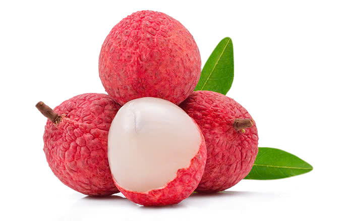
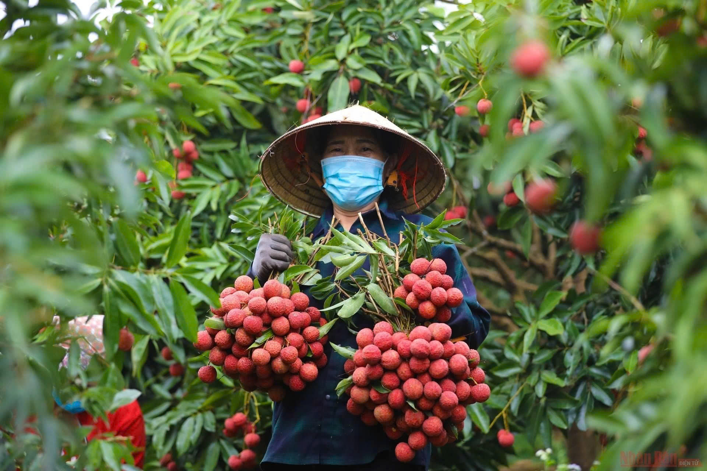

Vải Thiều Lục Ngạn
Suốt 20 năm qua, cây vải thiều đã trở thành niềm tự hào đối với mỗi người dân huyện Lục Ngạn (Bắc Giang). Là cây không chỉ xóa đói giảm nghèo mà còn giúp người dân làm giàu chính đáng trên mảnh đất quê hương…
Nỗ lực vì chất lượng sản phẩm Có lẽ không ở nơi đâu, cây vải thiều lại được người dân vun trồng, chăm sóc dầy công như ở Lục Ngạn. Để "biến” hàng chục nghìn ha đất trống, đồi trọc nghèo khó xưa kia thành miệt vườn vải thiều tươi tốt và trù phú hôm nay, những con người nơi đây đã cần cù lao động, tạo những đường băng đồng mức trên các quả đồi để trồng vải. Tiếp đó là những kiến thức khoa học đúc rút từ thực tiễn được người trồng vải ứng dụng. Việc khắc phục hiện tượng cây vải thiều ra quả cách năm là điều kỳ diệu trong sản xuất hàng hóa nơi đây. Sự kết tinh của đất đai, khí hậu mang đặc trưng riêng; sự quan tâm của cấp uỷ, chính quyền địa phương; tri thức của các nhà khoa học; kinh nghiệm chăm sóc cây vải thiều của người dân địa phương đã tạo nên sản phẩm vải thiều Lục Ngạn thơm ngon nổi tiếng: Quả to, chín đỏ, hạt nhỏ, cùi dầy, thơm ngon và ngọt lịm…
Cũng từ khi ấy, nâng cao chất lượng quả vải thiều được các cấp chính quyền và người dân địa phương quan tâm hơn. Nhiều hợp tác xã sản xuất vải thiều sạch an toàn theo tiêu chuẩn VietGAP được thành lập, đi vào hoạt động hiệu quả. Thực tế, việc đẩy mạnh sản xuất vải thiều sạch, an toàn theo tiêu chuẩn VietGAP không chỉ nâng cao chất lượng sản phẩm, giảm chi phí sản xuất (nhờ sử dụng lượng phân bón và thuốc bảo vệ thực vật khoa học), nâng cao giá trị quả vải, mà còn bảo vệ sự an toàn cho người sử dụng và sức khỏe của chính người sản xuất. Nhờ thế, ngày 17 – 5 vừa qua, sản phẩm vải thiều Lục Ngạn đã được Trung ương Hội Nông dân Việt Nam tôn vinh là sản phẩm nông nghiệp tiêu biểu trong nước Làm giàu từ vải thiều
Những năm gần đây, không chỉ người dân các xã vùng thấp quan tâm đến thâm canh, nâng cao chất lượng quả vải thiều mà bà con đồng bào dân tộc thiểu số các xã vùng cao như: Tân Sơn, Hộ Đáp, Cấm Sơn… cũng áp dụng thành công tiến bộ kỹ thuật vào chăm sóc vải thiều. Theo đó, chất lượng quả được nâng lên rõ rệt: Quả to đều, chín đỏ đẹp, thơm ngon nên thị trường tiêu thụ ở vùng cao đã trở nên nhộn nhịp không kém vùng thấp. Nhờ thế người dân bán sản phẩm vải thiều thuận lợi và được giá.
Điển hình tại xã Tân Sơn, trước kia bà con muốn bán được quả vải phải vận chuyển hơn 30 km xuống thị trấn Chũ. Nhưng ba năm gần đây, nhờ chất lượng quả vải được nâng cao nên nhiều tiểu thương về tận vườn thu mua. Số hộ trồng vải có thu nhập hàng trăm triệu đồng mỗi năm ngày một nhiều. Tiêu biểu như gia đình ông Lường Văn May, ở làng Hả, xã Tân Sơn với 200 cây vải cho thu hoạch, mỗi năm gia đình ông thu hơn chục tấn quả.
Thống kê từ phòng chức năng, diện tích vải thiều toàn huyện hiện có gần 18 nghìn ha. Năm 2013, sản lượng vải thiều tươi đạt 72 nghìn tấn, giá trị đạt hơn 100 tỷ đồng. Vải thiều Lục Ngạn đã có thị trường tiêu thụ ở khắp các vùng trong cả nước và được xuất khẩu sang thị trường các nước: Trung Quốc, Singapore, Campuchia, Lào… và một số nước Đông Âu. Vụ vải thiều năm 2014, theo đánh giá của cơ quan chuyên môn, sản lượng vải thiều của Lục Ngạn ước đạt 90 nghìn tấn quả tươi, tăng 18 nghìn tấn so với vụ năm 2013. Để giúp nhân dân tiêu thụ vải thiều thuận lợi, UBND huyện đã thành lập Ban Chỉ đạo hỗ trợ nhân dân thu hoạch, chế biến và tiêu thụ vải thiều năm 2014. Cùng đó, các gia đình, tổ chức cũng đang tích cực chuẩn bị các điều kiện cho vụ thu hoạch vải. Hy vọng với những nỗ lực đó, Lục Ngạn sẽ có một mùa vải thiều thắng lợi.